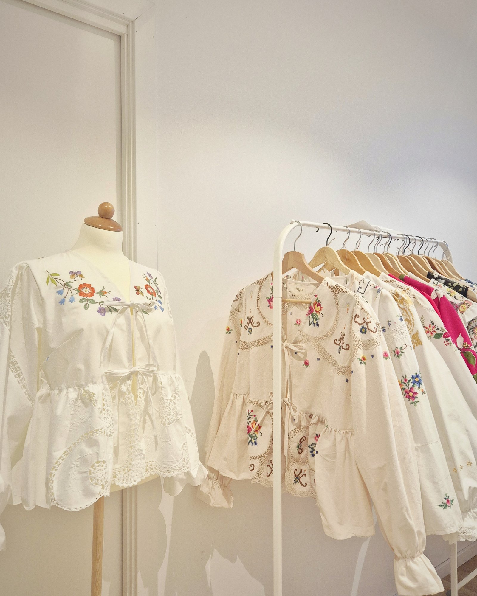

Redesign
Klyo
Kulani Premadasa
Klær laget av blant annet duker, gardiner og overskuddsmaterialer.
AVANT · Merkeoversikt
Små og nye merker, samlet på ett sted. Bli kjent med designerne gjennom historiene våre.
2 merker · A–Å

Redesign
Kulani Premadasa
Klær laget av blant annet duker, gardiner og overskuddsmaterialer.

Skreddersøm
Sheila Brox
Dresser tilpasset kundens mål, med valg av farge og design.
Prøv et annet søkeord, eller se hele utvalget.